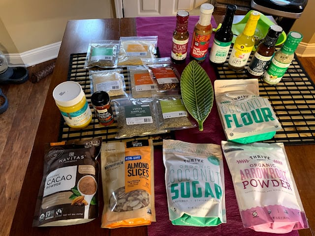
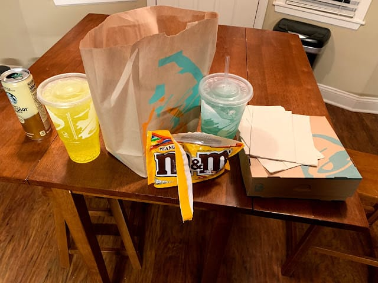

Motto: You can probably just stop reading here, too.
Today is day 30 of our Whole30.
If you don’t know about Whole30, it can be summarized pretty simply as a (fad) elimination diet in which you do not consume added sugars, grains, dairy, and legumes for a full 30 days. The idea being foods from these groups may be affecting your health in your day-to-day life, and you may not even realize it. By removing these items for 30 days your body can get used to not having them and you can see how that feels. Then you may begin re-introducing foods from these categories slowly, to see how those foods affect you.
The sales pitch for the diet says it may help with:
- Cutting cravings
- Consistently high energy levels
- Better sleep
- Better focus
- Being “strangely happy” (their words, not mine)
- Potentially abating symptoms of all sorts of medical conditions (allergies, headaches, joint pains, GI troubles, and lots of other stuff) Whole30 is like a 30 Day Cleanse, except instead of eating only green smoothies, you only eat fruits, vegetables, meats, nuts, oils, and spices. I was interested in it from an experimental perspective. My wife was too. So we made the commitment.
That was 30 days ago. Here’s what Whole30 has been for us:
Aaron:
To start, I’ll say I’m glad I did Whole30. I learned a lot and saw benefits I was not expecting… though it wasn’t exclusively a good experience.
I did NOT, however, see as many life-changing benefits as I hoped. Specifically I didn’t see changes to my joint health, nor any (positive) changes to my gastrointestinal system. To be fair - lately my back has been pretty healthy anyway, so there was limited room for noticeable improvements in that regard… but it’s equally fair to say that my GI system got worse. Without going into the details, it’s enough to say that trips from the bathroom went from “okay” to “less okay”. This effect was worse a couple weeks in, but is still present here on day 30.
I DID lose ~10 pounds in those 30 days, which is crazy because I didn’t feel like I had much to lose to begin with. Also I noticed a change in how food tasted. I had a cache of mixed nuts at my desk at work for a year that I never touched because they tasted like salty blandness. Three weeks into the Whole30, I noticed these same nuts started to taste like sweet deliciousness. I noticed that my standard 2PM crash at work wasn’t really happening any more.
The best part of this whole thing has been expanding my horizons, food-wise. I’m eating and enjoying things I have always avoided for no good reason. I’m 100% out of the “what meat + boxed something combination are we eating tonight?” rut. That’s incredibly liberating. It makes me very happy.
I look forward to tomorrow, but I don’t expect to suddenly change everything about how I’ve been eating. I’ll add in some grains every once in a while. I’ll add in protein powder… but I’m not going to suddenly go get Taco Bell.
Melissa - guest blogger:
Yay! I feel special to be a guest! Unfortunately for you, readers and Aaron, I don’t know how to be concise with words. Here is my Whole30 experience: A few months ago, after years of experiencing undiagnosed joint pains and constant postnatal discomfort, I found myself hopping from doctor to doctor and becoming hopeless and depressed that I couldn’t feel better. Eventually, I noticed that both a physical therapist and nurse practitioner had mentioned to me that I should try out Whole30 and/or read Melissa Hartwig’s book about nutrition. At that time, I was not exercising (and honestly hadn’t to speak of for a few years) and was eating meals that were mostly combinations of meat + boxed pasta. Maybe the occasional microwavable veggies and canned fruit. I never went to the “healthy” section of the grocery store… honestly, because it made me feel anxious with a feeling of *I know I need to eat this way but I don’t know how so I guess I’ll just keep doing what I’m doing until I’m motivated enough to look into this.* When you don’t understand half of the ingredients (tapioca? ghee? arrowroot? kimchi?), it makes it hard to justify the extra cost and time trying to understand what you’re looking at. You feel stupid and like you’re being duped. But at the same time, our comfortable and regular diet truly felt like a tasty but unhealthy “rut.” I just thought of a visual metaphor that makes sense to me. Let’s picture a bowling ball that has curved into the gutter. Slim chance it’s going to jump out of the gutter once it’s there. It’s going to take a LOT of energy from a spin throw— but sometimes it happens! And then it’s back on track the rest of the lane until- Pow! Spare! Ok.. cheesy.. but hey, it’s how I feel: I MADE IT out of the gutter this time!!! I finally listened to those doctors [insert cheesy motivation about being a mom now and being responsible for another human] and asked Aaron if he would support me trying Whole30. I had no idea he would go all in, too! I decided to be very intentional about taking care of myself in every way by going cold turkey into a new diet, exercise, and self-care routine. Here is what happened:
I started with some research. I listened to “It Starts with Food” and watched Marie Kondo’s Netflix series. I bought a Whole30 recipe book at Costco. I learned about the Beachbody On Demand app and decided on a fitness plan. Aaron helped by pushing me to pick a start day and we were coming up on the first of the month. After looking in my cabinets, I decided we would have to either throw everything out OR delay our start until we ate through them like the very hungry caterpillar. We went with the latter and had a horrible two weeks of carbs, more carbs, and nearly-expired unmentionable junk food. We MAY have packed on a few extra pounds beforehand. I flipped through my “Whole30: Fast and Easy” cookbook and jotted down a list of ingredients that we would need to acquire to make a core set of first foods. That first trip to Whole Foods was EXPENSIVE, but I felt so good about setting us up for success. Once our cabinets and fridge were cleared out & refilled with the foreign ingredients— so much coconut— we were set. Cooking was hard and time-intensive, but EVERY SINGLE recipe we tried was beyond amazing. I started noticing tons of changes. Many beyond what Aaron experienced, but I also started out at a less healthy point. Keep in mind that I was also starting a new intensive exercise routine- but here is what I noticed:
- Amazing, glowing skin
- A lack of belly pain that I didn’t even realize I had daily until it was gone
- ZERO days with joint pain
- Energy and excitement to exercise
- Fullness from smaller plates
- Disinterest in foods I would have slammed before (jelly beans, goldfish, popcorn, etc.)
- Pride in what I was feeding my son, rather than worry that he was getting junk food vicariously through his milk
- Pleasant digestion
- Metabolism changes (I notice it mostly as night sweats)
- Cooking takes forever, but it’s less of a “chore” and more of family time
- Expanded palate— I truly can’t believe how much I’m loving veggies I used to “hate”
- I’m becoming a label ninja- looking & being selective, rather than refusing to even peek
- Less anxiety… and tons of related positive effects!
- Hope that I can keep going; this was more than just ‘doable’- I loved the whole month!
All-in-all, I feel amazing. I can’t stop raving about it. I love the feeling so much that we’re planning on trying a modified paleo afterward. I’m guessing I have always had some level of intolerance to gluten or dairy or sugar. I never, ever thought I would be able to accomplish a restriction of one of those, let alone ALL 3! I’ve never done a “diet” before (even though you’re not supposed to call whole30 a diet), so I didn’t know I could have success. Cold turkey was definitely the way to go. Combining it with daily exercise when I was getting none before was SO hard, but I probably had more success in each because of the combo. I quickly lost around 10 pounds, so I’m down 10 from before pregnancy. YES! I think I would have lost more, but I saw a lot of muscle gain. It felt like food became my FUEL for exercise… rather than just hoping my food wouldn’t make me feel too bloated to exercise. My “after” pictures don’t reflect a ton of change yet, but I don’t even care. I am 100% more confident in my body and see the changes in the mirror. I used to say I could never have abs- I just wasn’t built that way- but I see baby abs! Each day, I feel so motivated by the changes I see from my hard work the day before. So would I recommend Whole30? ABSOLUTELY. I feel like I was the least likely-to-succeed person who ever tried it, and here I am afterward planning my next 30 days to be basically more of the same. So from one Melissa to another (Melissa Hartwig, co-founder of the Whole30 program)— thank you! This has truly changed my life.* And thank you, Aaron, for being my partner on this journey.
- Melissa, wife, survivor
*Not endorsed. Just the truth.
 |
|---|
| New |
{kind=link}
 |
|---|
| Old |
{kind=link}
Top 5: Tips if You’re Thinking about Doing a Whole30
5. Expect to spend more money on food than usual. Expect to spend WAY more time and energy on food than usual. This can be a good thing, though.
4. Don’t start a Whole30 if you are planning on going out of town. It is difficult and expensive to try to eat out & stay in compliance. Your options are limited and generally worse than the food you’d make yourself.
3. Buy (or check out from the library) a Whole30 recipe book. Make food from that. If you rely on stuff you already know how to make, you’re robbing yourself of half of the learning experience.
2. Read a bunch of recipes from the book, make a list of common ingredients they call for, then go stock up on those ingredients. One of the benefits of eating only whole foods is that you find a lot of commonality between ingredient lists.
1. Purge your stock of non-compliant foods before you start. If you’re staring an unopened bag of Oreos in the face; you’re gonna have a bad time.
Quote:
“That’s physically secure, because your password vault has fists”
- Josh -
“I have seen a lot of very historic [stuff] today but nothing prepared me for seeing the Batmobile”
- Joe -